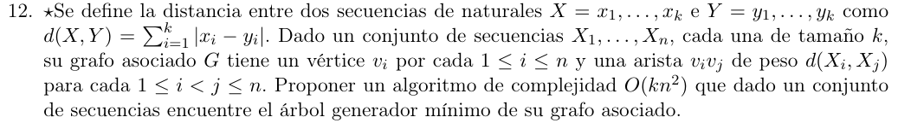

Precondición: \(|X_{i}| = k\), \(X\) será mi lista donde \(X\lbrack i\rbrack\) es \(X_{i}\)
\(d(X,Y)) = \sum_{i = 1}^{k}|x_{i} - y_{i}|\) con \(X = \left\{ x_{1.}..x_{k} \right\},Y = \left\{ y_{1.}..y_{k} \right\}\)
Y sea \(c:E(G) \rightarrow {\mathbb{R}}\) una función de costo de cada arista (la que usa prim/kruskal)
Algoritmo(X,n,k):
//Grafo vacio
G <- lista de adyacencias de tamaño n (n nodos sin aristas)
//Armado del grafo
Para cada i en 1...n:
Para cada j en (i+1)...n:
G[i].agregar(j)
G[j].agregar(i)
c(i,j) <- d(X[i],X[j])
//Generación del AGM
return Prim(G)
El armado del grafo vacio es generar una lista de \(n\) listas vacias, es \(O(n)\)
Luego tenemos que agregar una arista a una lista de adyacencia es \(O(1)\)
Calcular \(d(X,Y)\) es sumar cada \(x_{i},y_{i}\), \(k\) veces, esto es \(O(k)\), y está dentro de 2 loops anidados, más abajo probarmos que la complejidad total de este loop es \(O\left( kn^{2} \right)\).
Finalmente, sabemos que Prim devuelve un AGM asociado a un grafo \(G\), y Prim es \(O\left( m + n\log n \right)\) (nótese que acá \(m \approx n^{2}\) por lo que Prim es la mejor opción, aunque no va al caso)
Entonces nos queda \(O\left( n + kn^{2} + m + n\log n \right) \in O\left( kn^{2} \right)\)
\[\begin{array}{r} \sum_{i = 1}^{n - 1}\sum_{j = i + 1}^{n}O(k) + O(1) + O(1) = \sum_{i = 1}^{n - 1}\sum_{j = i + 1}^{n}O(k) = O(k) \times \sum_{i = 1}^{n - 1}\sum_{j = i + 1}^{n}1 = \\ O(k) \times \sum_{i = 1}^{n - 1}n - i = O(k) \times \left( \sum_{i = 1}^{n - 1}n - \sum_{i = 1}^{n - 1}i \right) = O(k) \times \left( n\sum_{i = 1}^{n - 1}1 - \sum_{i = 1}^{n - 1}i \right) = \\ O(k) \times \left( n(n - 1) - \sum_{i = 1}^{n - 1}i \right) = O(k) \times \left( n(n - 1) - \frac{n(n - 1)}{2} \right) = \\ O(k) \times \left( \frac{n(n - 1)}{2} \right) = O(k) \times \frac{n^{2} - n}{2} \in O\left( k.n^{2} \right) \end{array}\]